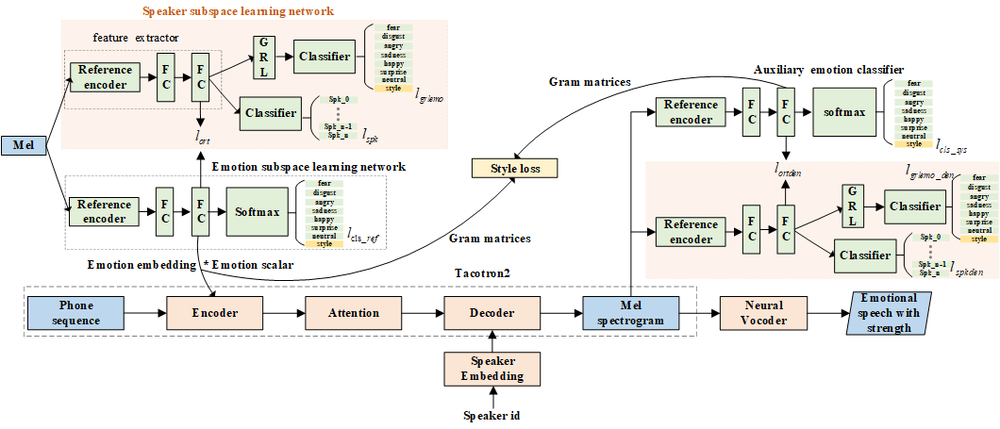

Controllable cross-speaker emotion transfer for end-to-end speech synthesis
Abstract:
The cross-speaker emotion transfer aims to transfer emotion from the source speaker to the target speaker. However, there exists a trade-off between speaker similarity and emotional expression due to speaker leakage, in which synthetic speech has the voice identity of the source speaker rather than the target speaker. Additionally, current methods lack the strength controllability of the transferred emotion from the source speaker to the target speaker. To solve the above issues, we propose a novel controllable cross-speaker emotion transfer method based on the end-to-end text-to-speech framework Tacotron2. First, we improve the emotion-discriminative ability of the emotion embedding and the predicted mel-spectrum by adding two emotion classifiers after the reference encoder and the Tacotron2's decoder. Meanwhile, the style loss is used to ensure the consistency of emotion expression between the generated and reference mel-spectrum. Secondly, to avoid speaker leakage, we remove the information related to the speaker in emotion embedding by introducing orthogonal loss to impose orthogonal constraints on emotional embedding and emotion-independent speaker representation. Finally, as the values in emotion embedding reflect the emotion strength, we propose to multiply a scalar to the emotion embedding to control emotion strength of synthesized speech. Experiments conducted on disjoint dataset show that our proposed method successfully mitigates the speaker leakage problem. Our proposed model outperforms the baseline systems in terms of speaker similarity and emotion expressiveness. Furthermore, the strength ranking test and pitch trajectories plots also prove that we can effectively control the emotion strength transferred to the target speaker and obtain synthetic speech with prosody diversity.
1. The architecture of the proposed model:

2. Demo of style transfer for cross-speaker emotional TTS :
To facilitate fair comparison, we use the same text to synthesize speech in six emotions. This may let the listeners more focused on the emotion delivered in the acoustic aspects. The text is (in Chinese): 让那些小主顾们等一等到吧。
emotion
Emotion reference audio
Target speaker reference audio
Backbone
Backadv
Proposed
Mspk-gst
Mspk-vae
surprise
happy
sad
angry
disgust
fear
3. Demo of emotion strength control in cross-speaker emotional TTS :
To facilitate fair comparison, we use the same text to synthesize speech in six emotions and three strengths. This may let the listeners more focused on the emotion delivered in the acoustic aspects. The text is (in Chinese): 让那些小主顾们等一等到吧。